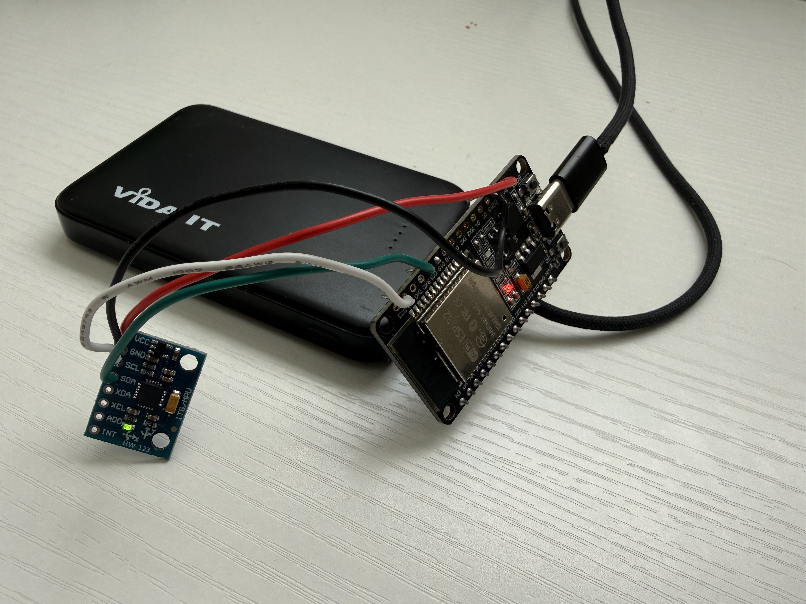
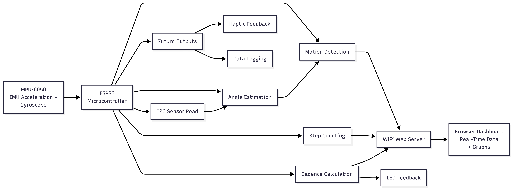
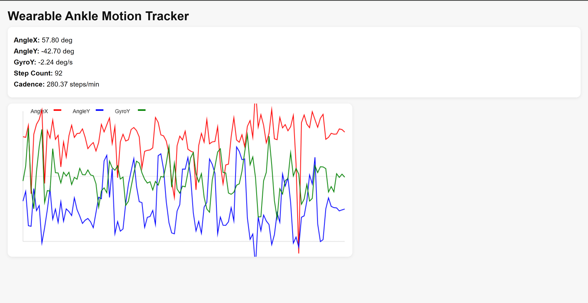

About
I develop embedded systems that connect sensors, microcontrollers, and control logic into functional hardware prototypes. My work focuses on real-time data acquisition, device-level programming, and translating physical signals into usable system behavior.
Skills
Languages
C/C++
Python
Verilog
Python
Verilog
Tools
Arduino IDE
GitHub
Quartus
ESP32
Breadboarding
GitHub
Quartus
ESP32
Breadboarding
Concepts
Embedded systems
Sensor interfacing
Digital logic
Real-time control
Hardware-software integration
Sensor interfacing
Digital logic
Real-time control
Hardware-software integration
Projects
Wearable Ankle Motion Tracking System
Embedded wearable system that captures ankle motion using an IMU and streams real-time biomechanical data to a browser dashboard over Wi-Fi.
- Reads accelerometer and gyroscope data using MPU-6050 and ESP32 over I2C
- Implements angle estimation, motion detection, step counting, and cadence calculation
- Hosts a real-time web dashboard using ESP32 Wi-Fi with live data visualization
Hardware Prototype

System Architecture

Live Dashboard

Future Projects
This portfolio is structured to expand with additional embedded systems, robotics, and engineering projects.